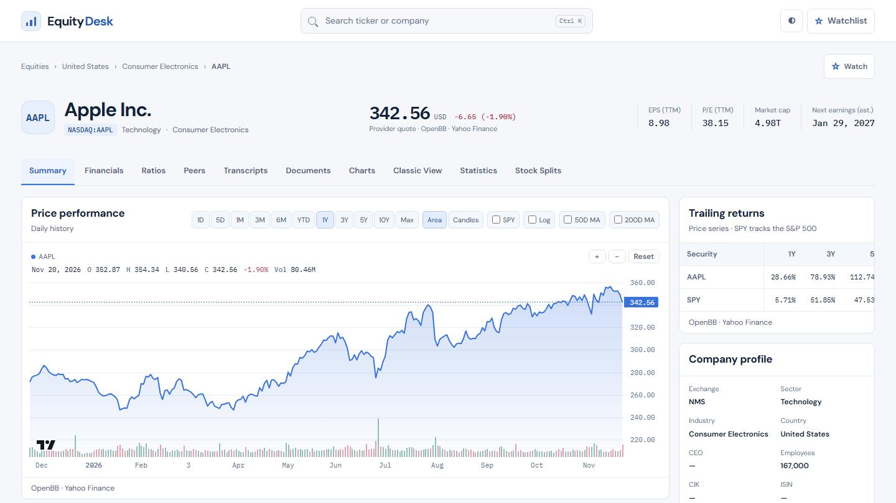

Stock research with live data, running on your own computer
Equity Desk shows a company's quote, financial statements, ratios, valuation history, peers and price chart in one place. It's free, needs no account or API keys, and gets its data straight from public providers such as Yahoo Finance and SEC EDGAR.

Why it runs on your computer
This website is only a guide. It can't fetch market data itself, because GitHub Pages hosts static files only. To see live data, you run a small Equity Desk server on your own computer:
at http://127.0.0.1:8766, an address only your own computer can reach.
receives each request and asks the data providers through the open-source OpenBB library.
send the data straight back to your computer. Nothing passes through any other server.
Install and get live data
You only need to do steps 1 to 3 once. After that, step 4 is all it takes to start the dashboard.
-
Install Python 3.12
Download it from python.org/downloads and run the installer with its default options. To check it worked, open PowerShell (press Win, type PowerShell, press Enter) and run:
py -3.12 --versionIt should print
Python 3.12.x. -
Download Equity Desk
Download the ZIP, right-click it and choose Extract All. You'll get a folder called
Equity_Desk-main. Or, if you use Git:git clone https://github.com/yestertommorrow-a11y/Equity_Desk.git -
Install the data libraries
Open the folder in File Explorer, click the address bar, type
powershelland press Enter. A PowerShell window opens in that folder. Then run these two commands, one at a time:py -3.12 -m venv .venv.\.venv\Scripts\python.exe -m pip install -r requirements.txtThe second command downloads OpenBB and its data providers, and can take several minutes.
-
Start the dashboard
Double-click Start Equity Desk.cmd in the folder. Your browser opens http://127.0.0.1:8766 with Apple (AAPL) loaded. That's live data.
Keep the black launcher window open while you use the dashboard. Close it to stop Equity Desk.
Windows may ask you to confirm running a file downloaded from the internet. The launcher only starts
server.pyfrom the same folder; you can open it in Notepad to check it first.
-
Install Python 3.12
On macOS, use the installer from python.org/downloads or
brew install python@3.12. On Linux, use your package manager or pyenv. Check it worked:python3.12 --version -
Download Equity Desk
git clone https://github.com/yestertommorrow-a11y/Equity_Desk.git cd Equity_DeskOr download the ZIP, unzip it, and
cdintoEquity_Desk-main. -
Install the data libraries
python3.12 -m venv .venv .venv/bin/python -m pip install -r requirements.txtThis downloads OpenBB and its data providers, and can take several minutes.
-
Start the dashboard
.venv/bin/python server.py --port 8766 --openYour browser opens http://127.0.0.1:8766 with live data. Press Ctrl+C in the terminal to stop it.
Using it
Search by ticker or company name (Ctrl+K). Tickers from other exchanges work too:
AAPL, MSFT, NASDAQ:NVDA. Statements come from SEC filings where available.
RY.TO, TSX:SHOP. Data comes from TMX and Yahoo Finance.
7203.T, 0700.HK, VOD.L. Data comes from Yahoo Finance.
Indices, currencies, futures and crypto (^GSPC, EURUSD=X) aren't supported. Use an ETF that tracks them instead, such as SPY for the S&P 500.
Troubleshooting
To check that live data is working, open 127.0.0.1:8766/api/health while Equity Desk is running. It shows "status": "ok" and the data providers it can use.
“py” or “python3.12” is not recognized
Python 3.12 isn't installed, or the terminal was opened before installing it. Install it from python.org, close the terminal, and open a new one.
The launcher says “This copy needs Python 3.12 and its OpenBB packages”
The .venv folder is missing. Run both commands in step 3 from inside the Equity Desk folder, then double-click the launcher again.
The page doesn't load, or says the port is in use
If Equity Desk is already running, the launcher opens the existing one. If another program uses port 8766, start Equity Desk on a different port:
.\.venv\Scripts\python.exe server.py --port 8770 --openUse http://127.0.0.1:8770 or http://localhost:8770. Other addresses are refused on purpose.
A section shows an error or “provider rate limit”
A data provider was busy or didn't have that dataset for this listing. Wait a minute and click Refresh data at the bottom of the page. Other sections keep working. Coverage outside the US and Canada is thinner.
The installation fails or is very slow
Make sure the .venv was created with Python 3.12, the version Equity Desk is tested with, and that you have an internet connection. Then run the pip install command again. Packages already downloaded are reused, so it's faster the second time.
How do I update or remove it?
To update, download the ZIP again (or run git pull) and rerun the pip install command. To remove it, delete the folder; the app and its libraries all live inside it. Your watchlist is stored in your browser.
Is it safe? Is my data sent anywhere?
The server listens only on your own computer (127.0.0.1), so other devices can't connect to it, and it only reads data. It has no accounts, trading, or analytics. Requests for market data go from your computer directly to the providers. The code is open source under the MIT License.